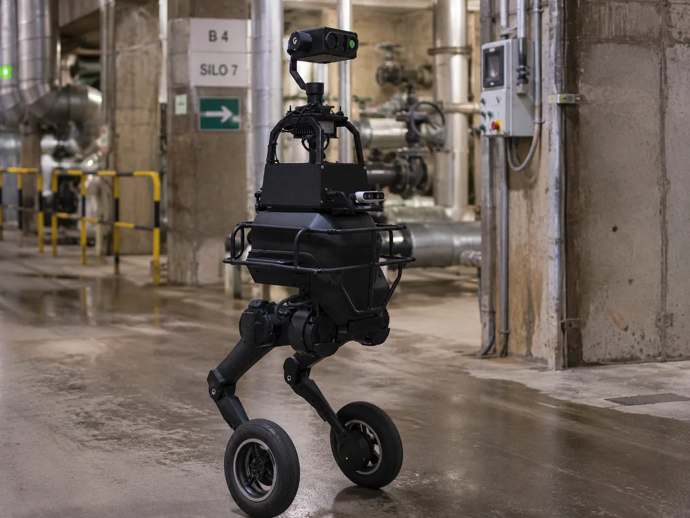

보정 반영

Patrol & Cleaning
LKR-CP
순찰과 청소를 하나의 플랫폼에서 수행.
Patrol & Cleaning
LKR-CP
순찰과 청소를 하나의 플랫폼에서 수행.
Patrol & Cleaning
LKR-CP
순찰과 청소를 하나의 플랫폼에서 수행하는 시설관리 통합 로봇.

Patrol Robot
LKR-T1
계단·요철 지형까지 순찰하는 점검 로봇.
진단
CTA 삭제로 본문이 약 40px 낮아졌는데 사진은 62%에 머물러, 페이드 끝(~60%)과 본문 시작(~70%) 사이에 빈 네이비 띠가 남았다 — 카드 하부가 비어 보이는 원인.
보정
사진 62 → 68%, 페이드 46→96% — 회수된 공간을 제품에게. 본문 위 숨 쉬는 여백 ~5%는 의도적으로 남김(바짝 붙이면 답답). 2줄 설명에서도 이브로우 밑 사진 잔량 ≤13%로 가독 침범 없음.
반영
아래 6의 그리드에도 68%를 적용해 둘이 항상 같은 상태를 가리키게 함. 컴포넌트 반영 시 이 값이 cta 없는 기본형의 표준.